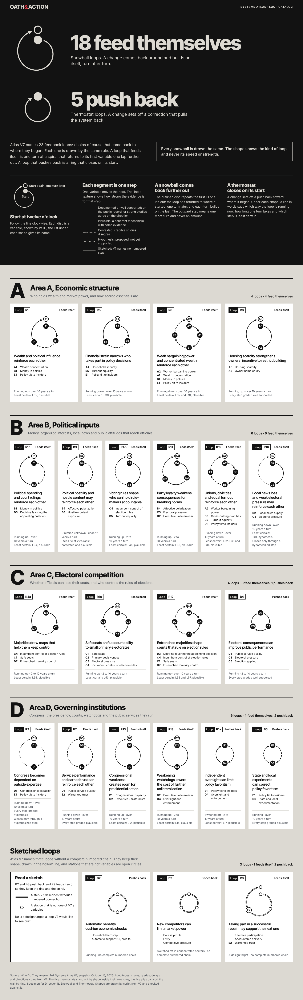
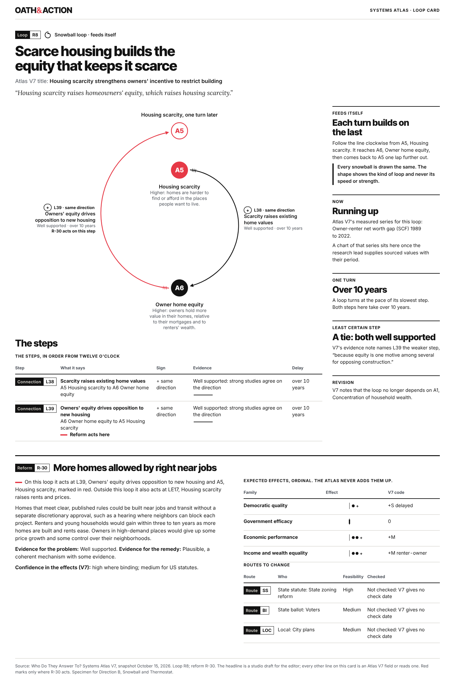
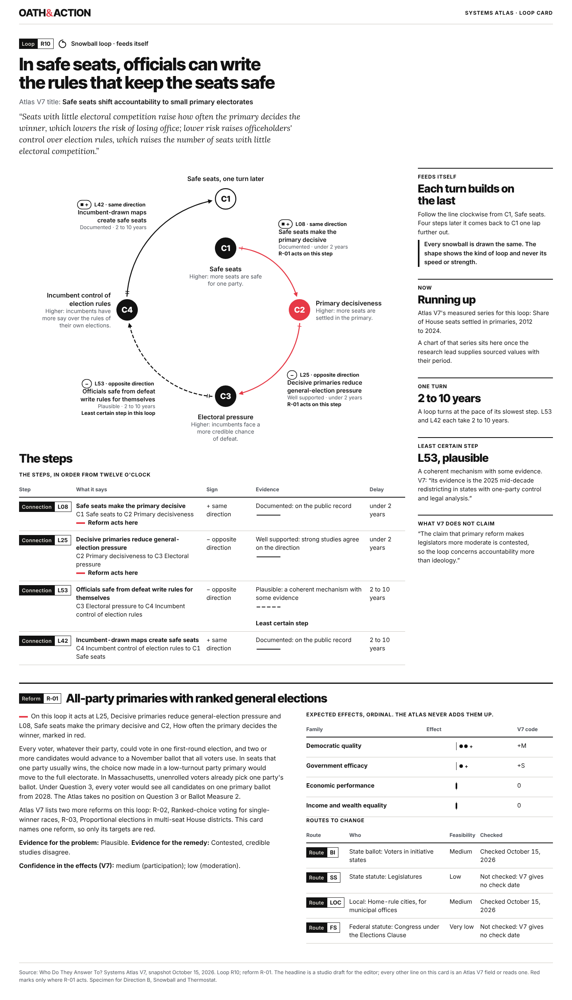
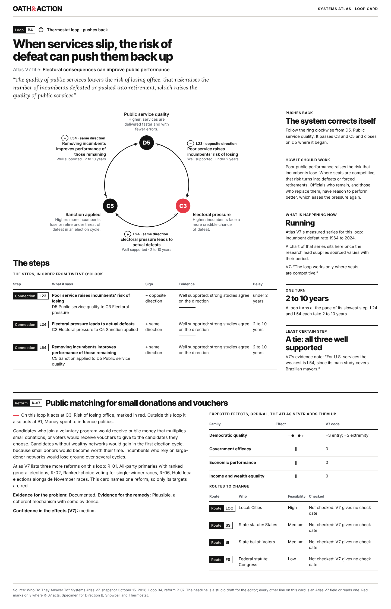
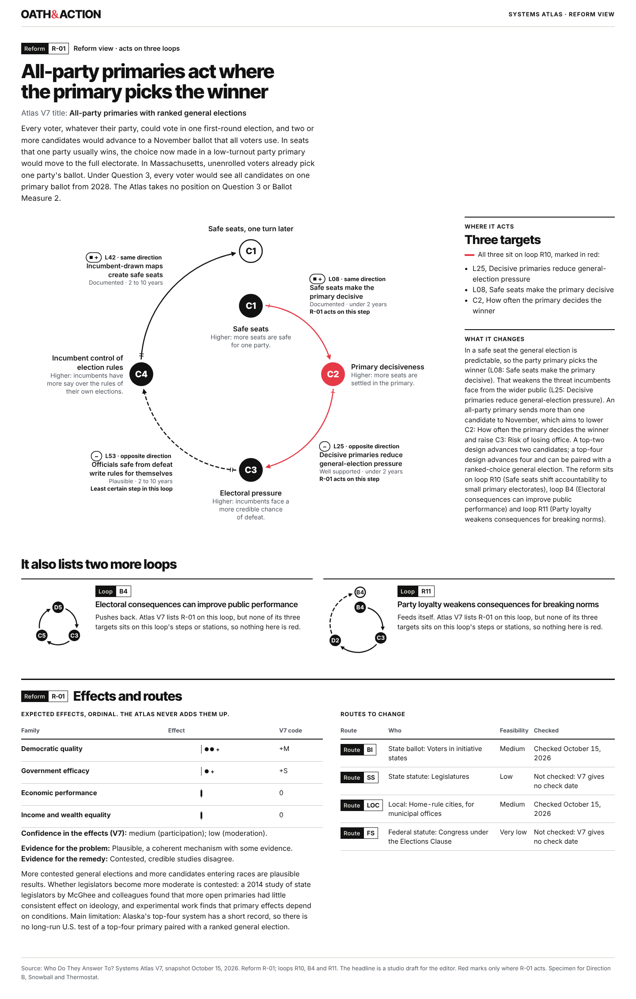

Phase 2 · Systems maps, round two · October 28, 2026
Direction B: Snowball and Thermostat
The shape tells the reader what a loop does before any word. A loop that feeds itself is one turn of an Archimedean spiral that comes back to its first variable one lap further out. A loop that pushes back is a ring that closes on its start. All 23 Atlas V7 loops are drawn by script from V7 and checked against it.
Every snowball is drawn the same. The shape shows the kind of loop and never its speed or strength.
Test first: passed, with one change
I drew R8, R10 and B4 at miniature and card size before the full set. At the review's growth of 1.3 the echo lands on top of the first station at every size the review sets, so the shape cannot be read. At 1.8 the echo clears, and in my judgment the spiral reads as one turn that comes back further out. It does not read as a drain or a target. Runaway growth is a small risk on loops running down, and the words beside each shape carry the direction. This is studio judgment. The five-person reader check needs Dustin's go and has not run. If two or more of five readers see a drain or runaway growth, the ring folds into Direction A.
Brief: work/handoffs/phase-2/20261028_CD-Review-Of-Map-Directions.md, section 4, Direction B. Direction B has no whole-system map of its own; it rides on Direction C's poster as a line bullet (section 9 below). Directions A and C are built in parallel by other makers.
1. The test: R8, R10 and B4 before the full set
Same three loops, same frame, two values of k. The geometry is one rule: radius r (1 + (k − 1) t / 360) at angle t, stations at equal angles clockwise from twelve o'clock, the echo at 360 degrees.
Miniature, 150 px, k 1.3: the echo overlaps the first station by 13.0 px
LoopR8 at k 1.3.LoopR10 at k 1.3.LoopB4 at k 1.3.
Miniature, 150 px, k 1.8: the echo clears the first station by 5.5 px
LoopR8 at k 1.8.LoopR10 at k 1.8.LoopB4 at k 1.8.
Card, r 155 px with 54 px discs
R8 at k 1.3: the echo overlaps the first station by 10.0 px at card size.R8 at k 1.8: the echo clears by 67.5 px and the return sweeps out past its start.
Question
k 1.3, the review's start
k 1.8, chosen
Can a reader see the echo?
Fails The echo disc sits on the first station at 150 px, on the card and on the phone. The ID cannot be read.
Yes. 5.5 px clear at 150 px, 67.5 px on the card.
Does it read as a drain?
No. It reads as a ring with a smudge at the top.
No. One turn, an empty center and arrowheads that run outward clockwise. A drain needs many turns closing on a point.
Does it read as a target?
Partly: start and echo stack like two rings.
No. Nothing sits in the center and no ring repeats.
Does it read as runaway growth?
No.
Some risk. One bounded turn reads as "comes back further out", which is the snowball. On the six loops running down, an outward turn could read as more; the card states the direction in words beside the shape.
Can a reader tell the kinds apart without a key?
Barely. Spiral and ring look almost alike.
Yes, in every row of the catalog. A thermostat closes and sits smaller, at the radius where every snowball starts.
2. The loop catalog, as a page

Loop catalog. Captured in Chromium at 1440 px; a phone shows the 390 px capture.
Open the page itself to read it at any width.
Spec
Head, Charcoal
Two emblems, 240 by 240 px, Newsprint on Charcoal, 5 px display stroke, 20 px discs.
Counts in Inter Tight 800 at 96 px, 56 px under 760 px; 18 and 5 counted from V7 types.
The printed line in a 2 px Newsprint frame. How-to-read strip: four steps and the M1 texture key with M2 words.
Area plates, Newsprint
Band: letter in Inter Tight 800 at 96 px, name at 34 px, V7's region text, kind counts.
Rows fill: six-wide or four-wide by the area's count; 16 px gutters; two columns under 760 px.
Group rule: the area holding most of a loop's numbered variables.
Tile, White
Loop chip (M3) and the kind in words; the 150 by 167 px shape, centered; V7 title in Inter Tight 600 at 17 px.
Stations by ID and V7 chain label; facts line: direction, one turn in words, least certain step, closure.
No signs, ticks, pointers or red (notation budget).
Miniature geometry
k 1.8; r 42.5 px; center (83.5, 91.75) in a 150 by 167 frame for every loop.
26 px Charcoal discs, IDs in Inter 700 at 13 px, Newsprint; the echo as a 2.5 px outlined disc with the same ID.
2.5 px stroke, M1 textures per segment; 9 by 4.5 px arrowheads; sketched steps in the hollow line, open stations 14 px.
3. The R8 card, as a page

R8 loop card. Captured in Chromium at 1440 px; a phone shows the 390 px capture.
Open the page itself to read it at any width.
Spec
Figure
k 1.8, r 155 px, 54 px discs with IDs in Inter Tight 800 at 20 px, 2.5 px stroke, 11 by 5.5 px arrowheads, M4 ticks after each departure.
Station names in Inter 600 at 16 px with "Higher:" rules from V7's increase_means at 14 px; the first station's name inside the turn.
Step labels outside each segment: sign pill with the record square on documented steps, ID and reading, V7 name at 15 px, grade word and delay in words.
Page
White; headline Inter Tight 800 at 44 px (30 px on a phone); V7 title; the read-aloud sentence in Lora Italic at 20 px.
Figure column and a 340 px rail: kind, Now with V7's series name, one turn, least certain step, revision.
No chart: the series waits for sourced values from the research lead.
Red, Rule 05.3
R-30 is the one reform the card names: L39, the A5 disc and its echo in Pillar Red (4.17:1 on White; IDs at 20 px bold count as large text).
R-30's third target, LE17, sits outside the loop and is named in words.
Phone, 390 px
Same k at r 56 px, 38 px discs, IDs at 19 px weight 800; step IDs with their sign pill.
A strip list under the figure names every station and step in order, then the return.
4. The R10 card, the stress test
Four steps from documented to plausible. L53 is named as the least certain step on the drawing and in the rail; R-01's three targets take the red.

R10 loop card. Captured in Chromium at 1440 px; a phone shows the 390 px capture.
Open the page itself to read it at any width.
5. The B4 card, a thermostat
The ring closes on D5. The rail reads in the order Reuters used for its famine work: how it should work, then what is happening now. R-07 is the reform the card names, at C3.

B4 loop card. Captured in Chromium at 1440 px; a phone shows the 390 px capture.
Open the page itself to read it at any width.
6. The R-01 reform view, on White
R-01 lists three loops. All three of its targets sit on R10, so R10 carries the red; B4 and R11 appear as miniatures with the reason nothing on them is red.

R-01 reform view. Captured in Chromium at 1440 px; a phone shows the 390 px capture.
Open the page itself to read it at any width.
7. Grayscale proofs
Each page with color removed. Red marks keep their place through line weight, the label "acts on this step" and the red key's text; textures carry every grade.
8. The spiral and the ring as a loop-kind mark, 24 px Option, pending Dustin's approval
The marks would replace round one's loop-kind arrow (shown at the end, retired). Each prints beside the words "feeds itself" or "pushes back". Shown at 16, 24, 48 and 96 px on the four surfaces.
Newsprint
White
Charcoal
Prussian
Round one's arrow mark, retired:
Mark
Crisp share (D1-17 needs 0.60)
Ink share
Spiral, 24 px
0.44
0.21
Ring, 24 px
0.49
0.19
Spiral, 16 px
0.30
0.20
Ring, 16 px
0.35
0.18
Similarity of spiral and ring (D1-16, distinct under 0.60): 0.338 at 24 px, 0.694 at 16 px.
What these measures say: the pair is distinct at 24 px. At 16 px the spiral's opening closes and the two read alike, so the mark is proposed for 24 px and larger only. Neither mark reaches D1-17's 60 percent crisp share, a bar set for straight-edged icons; a round 2 px line reaches about half. A variant with its extremes snapped to whole pixels measured no crisper and less distinct, so I kept this drawing.
9. On Direction C's poster
Direction B draws no whole-system map: a spiral cannot share a station with six other loops. The poster belongs to Direction C, built by another maker. B's contribution would be the line bullet: the loop ID and the kind mark at the first station of each line.
R8Snowball line bullet
B4Thermostat line bullet
Prussian ground, Newsprint line, White names, no red (Rule 05.3: red never sits on Prussian). The station names are R8's, used to show placement only.
10. Spec: geometry, honesty and the notation budget
Geometry
Snowball: radius r (1 + (k − 1) t / 360), t from 0 to 360 degrees clockwise from twelve o'clock; k = 1.8 for every reinforcing loop at every scale.
Thermostat: a circle at r.
Stations at t = 360 i / n; the echo at 360. Curves as cubic Bézier pieces of 8 degrees or less with exact tangents.
Every station's angle and radius: phase-2/maps-r2/b/20261028_Direction-B-Geometry-Data.json.
Honesty rules
Shape comes from V7's loop type only. Delay, direction, grade and valence never set a shape, size or color; the verifier checks shape against type and color sets on every miniature.
The outward step means one more turn and never an amount. The printed line appears on the catalog and on every card.
V7's direction appears in words only: running up on 10 loops, running down on 6, and the cases V7 calls running, switched off, direction unknown or a design target.
Notation budget, as built
Miniature: shape, M1 textures, hollow line, IDs, echo, one arrowhead per step. Kind, delay, direction and least certain step in words in the tile.
Card: plus sign pills with record squares, grade words with glosses in the steps table, M4 ticks, the weakest step named, red at the named reform's targets.
Catalog: no working red; the wordmark's ampersand is signature red.
Red rule, word for word (D2-01)
The wordmark's ampersand and the lockmark's lever are signature red and do not count, and neither do the ampersands inside the hinge diagram and the hinge-circle badge, which are identity marks. The hinge diagram never shares a view with the wordmark and never stands in for the hinge divider. An icon's red accent counts as signature red when the icon stands alone, as an app tile, an avatar or a single feature icon. In a row or a menu, icons go one color and only the current one keeps its red. Each view (one screen, card, slide or printed page) then carries one working red, in this order of precedence: an error the reader must fix; the step a reader can take now; the one point the headline names, which in a systems figure is where a reform acts. One job may take several marks, such as each target of one reform. A hinge headline's ampersand uses the view's working red. The hinge divider's ampersand takes its surface's ink: Charcoal on Newsprint and White, Newsprint on Charcoal, White on Prussian. In the guide itself, specimens, labeled failure cases and palette swatches do not count. Red never sits on Prussian.
11. Checks
Data check against Atlas V7 (maps_r2_b_verify.py)
Data check against V7: 0 mismatches across 46 drawings and 5 specimen pages.
All 23 loops drawn as miniatures and listed on the catalog page; each shape follows V7's loop type (spiral for R, ring for B).
Checked 113 drawn steps (link, from, to, sign, type, delay, grade, texture; ticks and sign labels on cards), 113 stations and 32 echoes against the equal-angle Archimedean geometry, and 2759 curve points (every Bezier endpoint and midpoint) against p(t) within 0.06 px.
Checked 18 red marks against 18 targets of the reform each card names; no miniature carries red or any ink but Charcoal on White.
Checked 89 printed values on the pages (directions, delays, weakest steps, step tables, effects, routes) and 45 inline drawing copies against their files.
Mutation test: caught: L39 drawn dashed though V7 grades it well supported, caught: C2 disc moved 6 px off its angle on the R10 miniature, caught: R1 miniature claims a different growth k, caught: L38 turned red on the R8 card, though R-30 does not target it, caught: B4 drawn as a spiral, caught: one delay tick removed from L53 on the R10 card, caught: R5 tile says running up though V7 records running down.
Rendered checks (maps_r2_b_check.js, Chromium through Playwright)
Loop-Catalog at 390 px: scrollWidth 390 of 390; smallest text 13 px (0 under 13); 0 low-contrast texts; 0 broken images; axe 0 violating nodes; labels 0 in 23 drawings, 0 collisions, nearest label to a curve 99 px.
Loop-Catalog at 1440 px: scrollWidth 1440 of 1440; smallest text 13 px (0 under 13); 0 low-contrast texts; 0 broken images; axe 0 violating nodes; labels 0 in 23 drawings, 0 collisions, nearest label to a curve 99 px.
Loop-Card-R8 at 390 px: scrollWidth 390 of 390; smallest text 13 px (0 under 13); 0 low-contrast texts; 0 broken images; axe 0 violating nodes; labels 5 in 1 drawings, 0 collisions, nearest label to a curve 17.63 px.
Loop-Card-R8 at 1440 px: scrollWidth 1440 of 1440; smallest text 13 px (0 under 13); 0 low-contrast texts; 0 broken images; axe 0 violating nodes; labels 21 in 1 drawings, 0 collisions, nearest label to a curve 16.96 px.
Loop-Card-R10 at 390 px: scrollWidth 390 of 390; smallest text 13 px (0 under 13); 0 low-contrast texts; 0 broken images; axe 0 violating nodes; labels 9 in 1 drawings, 0 collisions, nearest label to a curve 16.02 px.
Loop-Card-R10 at 1440 px: scrollWidth 1440 of 1440; smallest text 13 px (0 under 13); 0 low-contrast texts; 0 broken images; axe 0 violating nodes; labels 39 in 1 drawings, 0 collisions, nearest label to a curve 16.34 px.
Loop-Card-B4 at 390 px: scrollWidth 390 of 390; smallest text 13 px (0 under 13); 0 low-contrast texts; 0 broken images; axe 0 violating nodes; labels 6 in 1 drawings, 0 collisions, nearest label to a curve 15.63 px.
Loop-Card-B4 at 1440 px: scrollWidth 1440 of 1440; smallest text 13 px (0 under 13); 0 low-contrast texts; 0 broken images; axe 0 violating nodes; labels 28 in 1 drawings, 0 collisions, nearest label to a curve 18 px.
Reform-View-R-01 at 390 px: scrollWidth 390 of 390; smallest text 13 px (0 under 13); 0 low-contrast texts; 0 broken images; axe 0 violating nodes; labels 9 in 3 drawings, 0 collisions, nearest label to a curve 16.02 px.
Reform-View-R-01 at 1440 px: scrollWidth 1440 of 1440; smallest text 13 px (0 under 13); 0 low-contrast texts; 0 broken images; axe 0 violating nodes; labels 39 in 3 drawings, 0 collisions, nearest label to a curve 16.34 px.
Board at 390 px: scrollWidth 402 of 390; smallest text 13 px (0 under 13); 0 low-contrast texts; images 0 of 10 loaded; axe 0 violating nodes; 5 font faces loaded.
Board at 1440 px: scrollWidth 1440 of 1440; smallest text 8.63 px (40 under 13); 0 low-contrast texts; images 0 of 10 loaded; axe 0 violating nodes; 5 font faces loaded.
Wall test and 2x test
Wall: I viewed the catalog whole at 42 percent. The four-wide rows set their shapes at the left of wide tiles and looked unfinished beside the six-wide rows; shapes are now centered in every tile. The sketched plate showed a stray dot where a letter would sit; it now has no letter column. The 240 px emblems looked thin beside 96 px type; they now take a 5 px display stroke.
2x: crops of R8, R10, B4, R15 and R9 tiles and of every card figure at device scale 2. Found and fixed: the how-to-read demo's "Start" label sat on the curve; the phone figure's first label slid past A6; Inter's tabular figures spread hyphens ("Owner - renter"), so tabular figures now apply to tables only; the phone strip used an anticlockwise arrow for a clockwise loop and now uses the drawn mark.
I could not pin the page beside the Vignelli diagram or a Tufte plate; the studio holds no rights to show them, and I judged against my memory of them.
12. Rubric
Master Brief section 6, 1 to 5, ship threshold 4, with the review's seventh line.
Criterion
Score
Reason
Craft
4
True Archimedean geometry, read back point by point; labels placed by measured type and tested against the curve, the discs and each other (0 collisions, nearest label 15.6 px from a line); one stroke per view. Below 5: the 24 px marks miss the 60 percent crisp-pixel bar, and six-wide tiles set titles in four lines.
Clarity
4
Shape gives the kind before any word, and the first station's echo says the loop came back. Studio judgment only: the reader check needs Dustin's go. The phone figure shows IDs, with the strip under it naming each station.
Brand fidelity
4
Charcoal head, Newsprint wall, White tiles and cards, locked faces, the V5 wordmark master, and red only at the named reform's targets on White. Cover the wordmark and the surfaces and type still read as Oath & Action; the spiral is a new device Dustin has not approved.
Usefulness
4
One constant k, one geometry per scale, a geometry data file with every station's angle and radius, and scripts that draw any V7 loop. A builder can draw a new loop from the spec.
Evidence honesty
4
The printed line on every catalog and card, direction in words only, valence unused, the weakest step named, ties stated as ties, undated routes shown as unchecked. Open risk: on six loops running down, an outward turn could still read as more.
Accessibility
4
No page scroll, nothing under 13 px, 0 axe violations at 1440 and 390 on all five pages and the board; grayscale proofs decode; every drawing has a text equivalent and the phone strip. Screen readers and zoom not tested.
Beauty and distinctiveness
3
The head and the three cards are the strongest images across both rounds: a red return sweeping out past its start is ownable and needs no key. The wall rows still read as small line drawings at 1x, so the catalog sits under the bar.
Beauty sits under the threshold on the catalog wall. Instruction for the next pass: test 200 px shapes four to a row with a 3 px stroke, so the wall carries the shapes at poster weight, and keep every shape the same size so size never reads as strength.
Decisions made in this direction
Spiral growth k is 1.8 for every reinforcing loop at every scale. The review's 1.3 puts the echo on top of the first station at the 26 px and 54 px disc sizes the review sets (12 px overlap at 150 px), and 1.8 is the smallest value that clears it by 5 px.
Rings share the spiral's center and starting radius on every miniature, so every first station sits at the same point on the wall and a snowball visibly leaves the ring.
Each miniature step keeps one small arrowhead at its arrival, so a reader can tell outward from inward; it is the only mark beyond the budget's shape, textures and IDs.
When a reform targets the first variable, both the start disc and its echo take red: one job, two marks of the same variable (Rule 05.3).
On cards the first station's name sits inside the turn, under its disc, because the echo sits outward of it.
The phone card figure prints station IDs only, with a strip list under it naming every station and step in order; four-station loops leave no room for side labels at 358 px.
The phone catalog keeps 150 px shapes in two columns; the review's 120 px cannot clear the echo at any k under 2.4.
Catalog rows fill by area: six loops sit six-wide, four sit four-wide, and the sketched plate takes a reading note as its fourth tile. Shapes stay 150 px in every tile, centered.
The 240 px head emblems are drawn at a 5 px display stroke because they carry no data; every data drawing keeps one stroke per view (2.5 px).
The loop-kind mark is proposed at 24 px only; at 16 px spiral and ring score 0.69 and are not distinct, so smaller sizes print the words.
Card headlines are studio drafts for the editor, labeled in each card's foot.
For Dustin: approve or decline the spiral and ring as the loop-kind mark (section 8), and say whether to run the five-person reader check on R8 and R10.
Source for every drawn value: Who Do They Answer To? Systems Atlas V7, snapshot October 15, 2026, read through work/build/scripts/phase-2/maps_model.py. Scripts: work/build/scripts/phase-2/maps_r2_b_*.py and maps_r2_b_check.js.